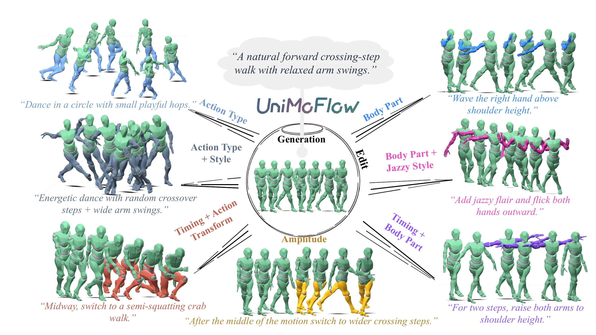
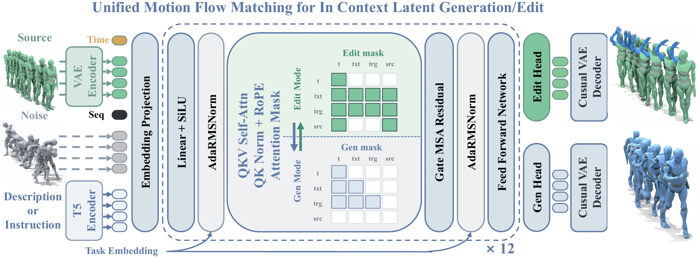
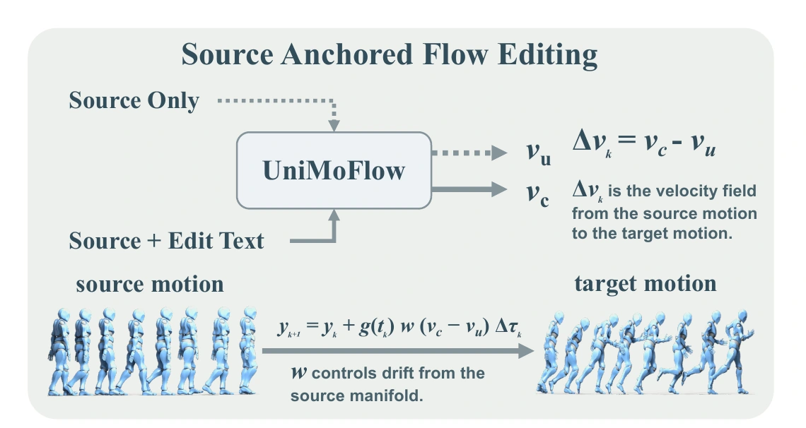
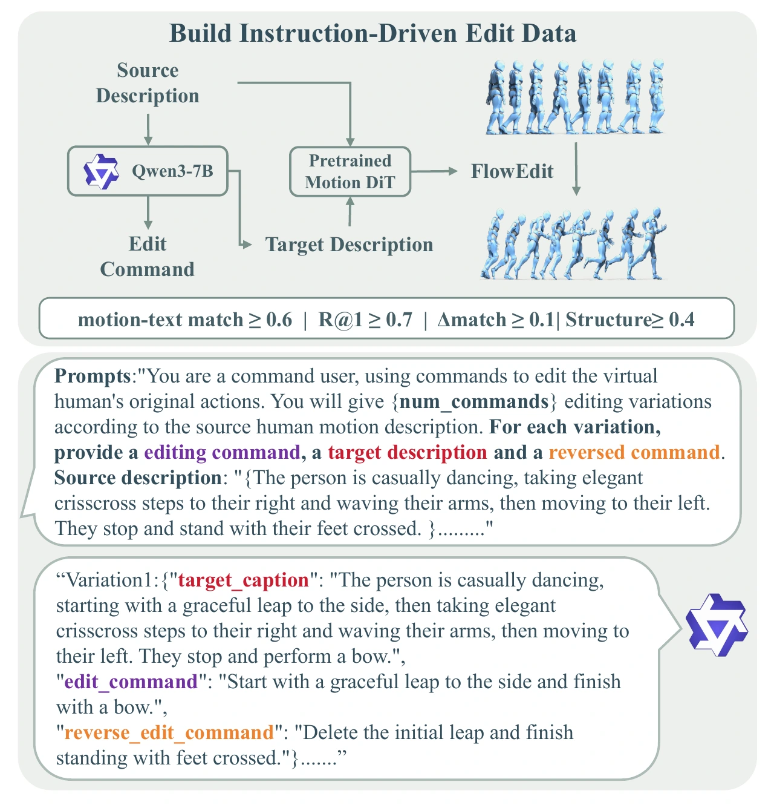
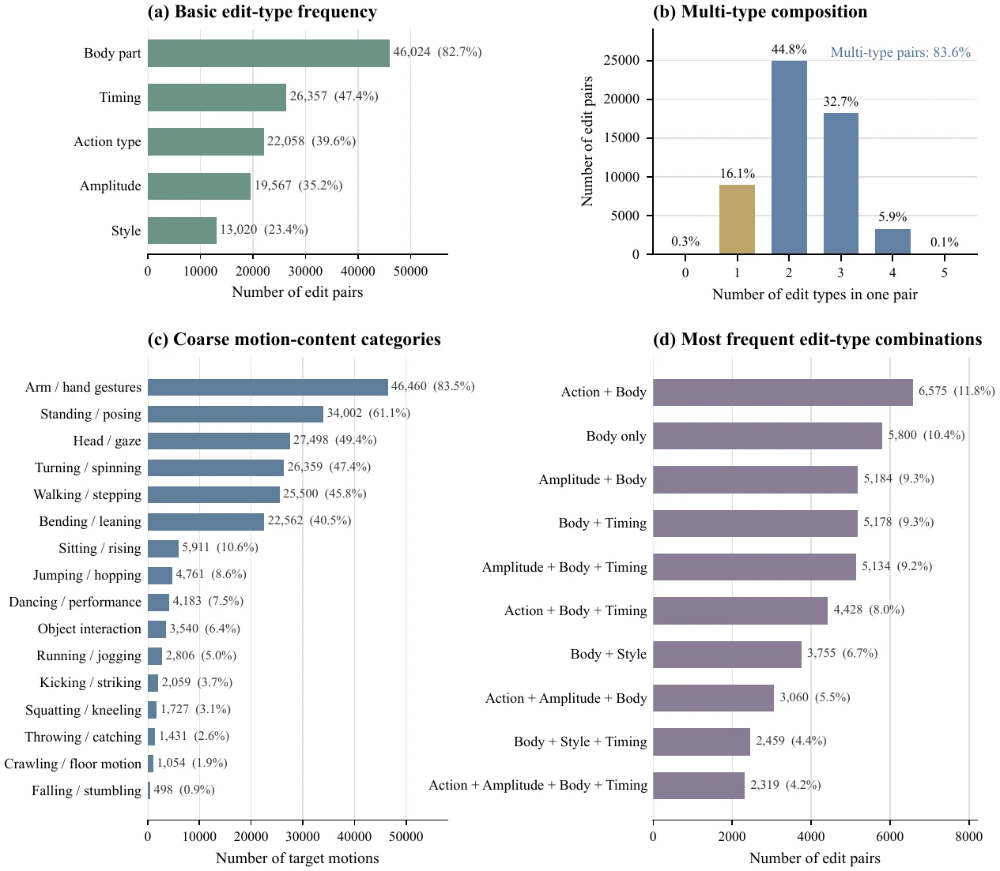
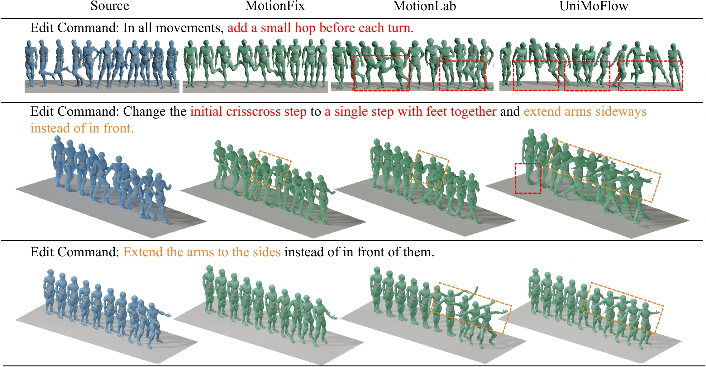
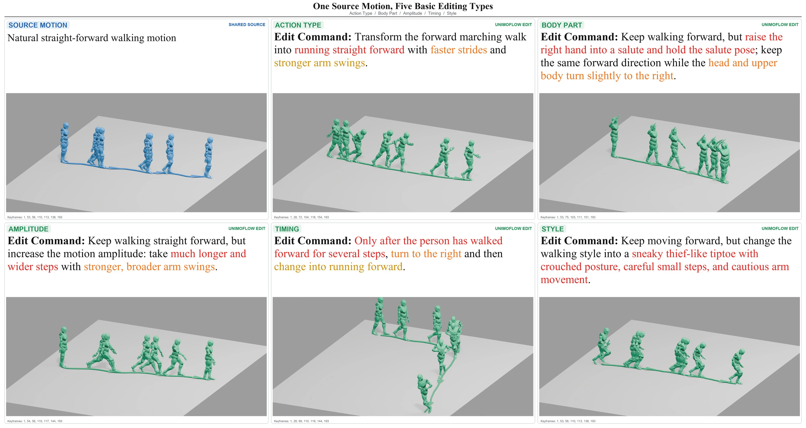

Omni-MoEdit
A closed-loop synthesis and verification pipeline creates 55,641 instruction-driven edit pairs across five overlapping edit dimensions.
Unified motion generation + editing
Generate once. Edit composably. One shared flow model learns broad motion priors and precise, source-aware instruction following.

Project talk
A concise walkthrough of the motivation, Omni-MoEdit data pipeline, unified flow-matching model, SAFE refinement, and qualitative results.
Abstract
Instruction-driven editing of 3D human motion requires precise spatiotemporal localization, rich semantic grounding, and strict preservation of unmodified content. Existing methods either resort to training-free adaptation of generative models or rely solely on triplet supervision; however, adaptation often yields suboptimal control, and manually curated triplet datasets remain severely limited in scale and semantic diversity. To overcome this bottleneck, we ground motion editing directly within text-to-motion generation across data, architecture, and inference. At the data level, we develop a closed-loop synthesis-and-verification pipeline that produces Omni-MoEdit, a large-scale dataset spanning body-part, amplitude, temporal, action, and style edits. At the architectural level, we introduce UniMoFlow, a unified latent flow-matching model that shares broad semantic and kinematic knowledge between generation and editing. At the inference level, SAFE (Source-Anchored Flow Editing) complements UniMoFlow with controllable, source-anchored refinement. Furthermore, we augment standard evaluations with semantics-aware metrics to account for valid edits that inherently deviate from a single ground-truth reference. Extensive experiments demonstrate improved target-text alignment, edit effectiveness, and cycle consistency, while maintaining competitive source fidelity and text-to-motion generation quality.
A closed-loop synthesis and verification pipeline creates 55,641 instruction-driven edit pairs across five overlapping edit dimensions.
A unified latent flow-matching model shares semantic and kinematic knowledge between text-to-motion generation and source-conditioned editing.
Source-Anchored Flow Editing adds controllable refinement by isolating the velocity contribution of the edit instruction while remaining anchored to the source.
Unified model
Text, noisy target tokens, and full source-motion tokens enter one shared sequence. A task-aware attention mask switches the same backbone between generation and editing, while lightweight heads specialize the final flow prediction.

The source motion is not compressed into a single condition vector. Its complete latent token sequence can interact directly with text and target tokens through global self-attention.
A mode-specific attention pattern lets one Transformer absorb clean text-to-motion supervision and instruction-driven edit triplets without separating their knowledge.
SAFE uses the residual between instruction-conditioned and source-only velocity fields to trade off source fidelity and semantic edit strength at inference time.

Omni-MoEdit dataset
Qwen3-7B proposes forward and reverse instructions, a pretrained motion DiT synthesizes target motions, and automatic verification retains pairs that align with the target text and preserve usable source structure.

Every accepted record contains source and target motions, source and target captions, a forward instruction, and a reverse instruction. Split-isolated synthesis prevents source-motion leakage across training, validation, and test sets.
Qwen3-7B derives a target description, forward edit command, and reverse command from each source caption.
A pretrained motion DiT applies FlowEdit to synthesize the target motion from the source and target description.
Target-text match, retrieval, semantic improvement, and structure thresholds retain reliable edit triplets.

Quantitative evaluation
SAFE leads the target-text and ground-truth editing protocols, while joint editing-generation training maintains competitive text-to-motion quality. Bold and underlined values reproduce the emphasis in the reported evaluation tables.
Higher is better for every metric. Self-FlowEdit uses a step-size scaling coefficient of 1.0 for comparison.
| Method | TR@1 | TR@2 | TR@3 | Match | Struct | Region | PosRatio |
|---|---|---|---|---|---|---|---|
| GT | 0.8973 | 0.9806 | 0.9953 | 0.7696 | - | - | 100% |
| UniMoFlow (SAFE) | 0.6347 | 0.7972 | 0.8651 | 0.5861 | 0.7927 | 0.3384 | 72.8% |
| UniMoFlow (Native) | 0.5492 | 0.7036 | 0.7777 | 0.5263 | 0.3725 | 0.3886 | 54.2% |
| OmniME | 0.3751 | 0.5502 | 0.6479 | 0.3855 | 0.5595 | 0.2355 | 24.3% |
| MotionLab | 0.4839 | 0.6652 | 0.7593 | 0.5083 | 0.7000 | 0.2749 | 48.4% |
| SimMotionEdit | 0.1290 | 0.2250 | 0.2932 | 0.1485 | 0.0760 | 0.2154 | 11.0% |
| MotionReFit | 0.1556 | 0.2659 | 0.3470 | 0.1484 | 0.2570 | 0.1019 | 4.7% |
| MotionFix-TMED | 0.4262 | 0.6243 | 0.7362 | 0.4552 | 0.8759 | 0.1990 | 27.5% |
Retrieval is measured against both synthesized targets and source motions. Cycle-Con measures reverse-edit consistency; lower FID is better.
| Method | Edited vs GT | Edited vs Source | Cycle-Con | FID | ||||
|---|---|---|---|---|---|---|---|---|
| R@1 | R@2 | R@3 | R@1 | R@2 | R@3 | |||
| UniMoFlow (SAFE) | 0.6762 | 0.8263 | 0.8923 | 0.5909 | 0.8353 | 0.9359 | 0.4458 | 12.45 |
| UniMoFlow (Native) | 0.5852 | 0.7302 | 0.8005 | 0.3664 | 0.5741 | 0.6985 | 0.2283 | 13.37 |
| OmniME | 0.3847 | 0.5634 | 0.6637 | 0.4807 | 0.7074 | 0.8245 | 0.0711 | 115.92 |
| MotionLab | 0.5197 | 0.7009 | 0.7969 | 0.5641 | 0.8087 | 0.9172 | 0.2190 | 26.06 |
| SimMotionEdit | 0.1208 | 0.2130 | 0.2781 | 0.0728 | 0.1393 | 0.1960 | 0.0050 | 173.72 |
| MotionReFit | 0.1168 | 0.2015 | 0.2683 | 0.1777 | 0.2898 | 0.3749 | 0.0097 | 692.13 |
| MotionFix-TMED | 0.4579 | 0.6735 | 0.7835 | 0.6166 | 0.8580 | 0.9547 | 0.1071 | 86.04 |
R-Precision and CLIP Score are higher-is-better; FID is lower-is-better. Multimodality reports output diversity.
| Method | R-Precision ↑ | FID ↓ | CLIP Score ↑ | MModality ↑ | ||
|---|---|---|---|---|---|---|
| Top 1 | Top 2 | Top 3 | ||||
| Real motions | 0.940 ± 0.001 | 0.976 ± 0.001 | 0.985 ± 0.001 | 0.001 ± 0.000 | 0.837 ± 0.000 | - |
| Discrete methods | ||||||
| T2M-GPT | 0.618 ± 0.002 | 0.773 ± 0.002 | 0.812 ± 0.002 | 32.629 ± 0.087 | 0.573 ± 0.001 | 9.172 ± 0.181 |
| MoMask | 0.777 ± 0.002 | 0.888 ± 0.002 | 0.927 ± 0.002 | 17.404 ± 0.051 | 0.664 ± 0.001 | 8.183 ± 0.184 |
| MoMask++ | 0.802 ± 0.001 | 0.905 ± 0.002 | 0.938 ± 0.001 | 15.060 ± 0.065 | 0.685 ± 0.001 | 7.259 ± 0.180 |
| Continuous methods | ||||||
| MDM | 0.503 ± 0.002 | 0.653 ± 0.002 | 0.727 ± 0.002 | 57.783 ± 0.092 | 0.481 ± 0.001 | 13.412 ± 0.231 |
| StableMoFusion | 0.679 ± 0.002 | 0.823 ± 0.002 | 0.888 ± 0.002 | 27.801 ± 0.063 | 0.605 ± 0.001 | 9.064 ± 0.138 |
| MARDM | 0.659 ± 0.002 | 0.812 ± 0.002 | 0.860 ± 0.002 | 26.878 ± 0.131 | 0.602 ± 0.001 | 9.812 ± 0.287 |
| Unified Flow | 0.917 ± 0.001 | 0.973 ± 0.001 | 0.987 ± 0.001 | 16.567 ± 0.045 | 0.663 ± 0.001 | 11.259 ± 0.293 |
| Base DiT | 0.753 ± 0.002 | 0.876 ± 0.002 | 0.922 ± 0.002 | 15.884 ± 0.055 | 0.705 ± 0.001 | 6.569 ± 0.179 |
| UniMoFlow (edit+gen) | 0.774 ± 0.002 | 0.887 ± 0.002 | 0.930 ± 0.001 | 15.331 ± 0.050 | 0.7162 ± 0.001 | 6.651 ± 0.121 |
Motion showcase
Three shared source motions anchor synchronized families of distinct editing results, making localization and compositional control easy to compare.
Edit vocabulary represented across the three source families
Transform the motion category while retaining a coherent source trajectory.
Localize an instruction to the intended joints and preserve the remaining body.
Increase or reduce motion intensity, stride length, reach, or swing range.
Insert, delay, or reorder an action within a precise temporal region.
Ground high-level attributes such as cautious, energetic, or exhausted in motion.
Each comparison places a real test-set source beside its UniMoFlow result. Switch between skinned and skeleton views to inspect the same edit at different levels of detail.
Text prompts demonstrate the shared model synthesizing complete source motions without an input motion. Switch each result between its skinned and skeleton rendering.
Qualitative evidence
Qualitative comparisons expose whether each semantic clause is realized in the intended temporal and body region while the surrounding source motion remains coherent.

One source - five controlled branches
Action type, body part, amplitude, timing, and style can be examined individually or composed in a single instruction. This paper figure complements the interactive video cases above.
